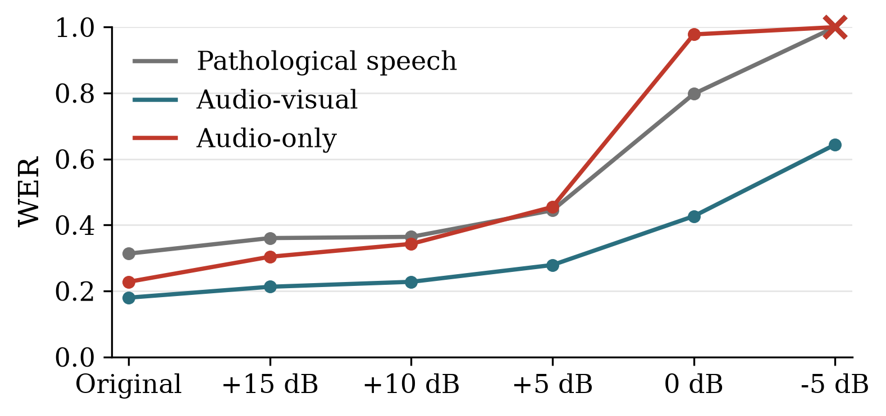

Introduction
Pathological speech can be unintelligible, harsh and erratic, however lip and mouth movement remain largely intact, offering cues that can support speech rehabilitation.

1Signal Processing and Speech Communication Laboratory, Graz University of Technology
2Dept. of Otolaryngology, Head and Neck Surgery, Div. Phoniatrics-Logopedics, Speech & Hearing Sci. Lab, Medical University of Vienna
3Comprehensive Centre for AI in Medicine, Medical University of Vienna
Pathological speech can be unintelligible, harsh and erratic, however lip and mouth movement remain largely intact, offering cues that can support speech rehabilitation.
We evaluate the model under four inference configurations: audio-visual against audio-only input, each with the output length either predicted by the duration module, which implicitly sets the speaking rate, or teacher forced to the length of the input. Audio-visual input with duration prediction achieves the lowest corpus WER, 13.4 percentage points below the pathological reference.
| Input | Duration | WER | CER | SIM | DNSMOS Pro | UTMOS |
|---|---|---|---|---|---|---|
| AV | predicted | 0.180 | 0.088 | 0.64 ± 0.18 | 2.80 ± 0.40 | 3.33 ± 0.31 |
| AV | teacher forced | 0.222 | 0.148 | 0.66 ± 0.15 | 2.81 ± 0.46 | 2.90 ± 0.41 |
| A | predicted | 0.228 | 0.121 | 0.63 ± 0.17 | 2.80 ± 0.41 | 3.31 ± 0.34 |
| A | teacher forced | 0.317 | 0.193 | 0.65 ± 0.15 | 2.80 ± 0.46 | 2.90 ± 0.44 |
The figure below shows corpus WER under babble noise added at decreasing SNR, from clean input down to −5 dB, evaluated on the in-domain set. Audio-visual input degrades gracefully, while audio-only input collapses toward the unprocessed pathological speech as noise increases.

Samples from the audio-visual input with duration prediction enabled. To protect speaker privacy, the pathological recordings are anonymized (formant ratio 0.8, pitch lowered by 4 semitones) while preserving the pathological characteristics.
| Pathological (anonymized) | Target | Conversion | Transcription |
|---|---|---|---|
| So viele Bücher – ich weiß gar nicht wo ich anfangen soll! | |||
| Kurz vor der Ankunft stand er auf, griff nach seiner Jacke und wartete, bis der Bus zum Stillstand kam. | |||
| Leg sofort die Hose weg! | |||
| Das Sofa ist neu – ganz neu. | |||
| In bar bezahle ich lieber, nicht mit Karte. | |||
| Leg sofort die Hose weg! | |||
| Leg sofort die Hose weg! | |||
| Das Sofa ist neu – ganz neu. | |||
| Sie nahm Sellerie, Lauch, Petersilienwurzel, ein paar gelbe Rüben und einen kleinen Bund frischer Kräuter. | |||
| Hast du deine Hausaufgaben schon gemacht? | |||
| Bin ich froh, dass es dir gut geht. | |||
| Das Sofa ist neu – ganz neu. | |||
| Das Sofa ist neu – ganz neu. | |||
| Wie gut das Brot schmeckt! | |||
| Ich gehe erst, wenn der Regen nachlässt. | |||
| Das klingt großartig! Was hast du dir überlegt? | |||
| Dieser Park ist sehr ruhig. | |||
| Die Straße führte an kleinen Vorgärten vorbei, und er spürte die Vorfreude, gleich willkommen geheißen zu werden. | |||
| Perfekt, das passt super. Ich freue mich, wenn es in der Küche fein duftet. | |||
| So eine schöne Wohnung! | |||
| So viele Bücher – ich weiß gar nicht wo ich anfangen soll! | |||
| Am frühen Donnerstagmorgen machte sich Jonas auf den Weg, um seine Tante in einer anderen Stadt zu besuchen. | |||
| Dann passt dieser Spaziergang perfekt, der Himmel ist klar und es weht ein leichter Wind. | |||
| Fährst du morgen in die Stadt? | |||
| Müssen wir über die Brücke? | |||
| Im Sommer trägt man oft leichte Stoffe, weil die Luft warm und feucht ist und man nicht so schnell ins Schwitzen geraten möchte. | |||
| Dort stehen lange Tische, Regale mit Materialien und Rechner, die für kreatives Arbeiten ausgestattet sind. | |||
| Der Sitz war weich, und durch das Glas sah er, wie die Dächer und Straßen langsam im Morgenlicht aufleuchteten. | |||
| Dann passt dieser Spaziergang perfekt, der Himmel ist klar und es weht ein leichter Wind. | |||
| Es ist wirklich erstaunlich, was ein paar Schritte in der Natur ausmachen. | |||
| Schön, dass du heute vorbeikommst. Ich wollte uns etwas Gutes zubereiten. | |||
| Sehr gern. Die Schale ist etwas hart, aber zu zweit macht es mehr Spaß. | |||
| Mir geht es genauso. Solche Abende tun richtig gut. | |||
| Ich habe gestern ein Plakat gesehen. Es wird ein Abendkurs für Zeichnen und Skizzieren angeboten. | |||
| Das wäre doch eine gute Gelegenheit, um nach der Arbeit abzuschalten. Hast du dich schon angemeldet? | |||
| Verstehe. Vielleicht gibt es auch einen Kurs am Wochenende. | |||
| Na das Taxi wartet sicher den ganzen Tag auf dich! | |||
| Ruf doch mal wieder deine Oma an… | |||
| Seit ein paar Tagen fühlte sich ihr Hals kratzig an, und der Hausarzt hatte ihr geraten, sich warm zu halten und leichte Kost zu essen. | |||
| Ich lache, weil mir meine Schwester einen so lustigen Witz erzählt. | |||
| Kommst du morgen mit ins Museum? | |||
| So viele Bücher – ich weiß gar nicht wo ich anfangen soll! | |||
| Ich freue mich, wenn du dir Zeit für etwas Kreatives nimmst. Soll ich dir beim Einschreiben helfen? | |||
| So schönes Wetter - endlich! | |||
| Hast du deine Hausaufgaben schon gemacht? | |||
| Mach das Fenster jetzt sofort auf! | |||
| Das Obst ließ sie dieses Mal liegen, weil sie Lust auf eine heiße Suppe hatte. | |||
| Ich bezahle lieber in bar, nicht mit Karte. | |||
| Gefällt dir das Konzert? | |||
| Fan – tas - tisch! | |||
| Das Gemeindeamt, weißt du wo das ist? | |||
| Die Suppe ist heiß. | |||
| Sobald die Pause vorbei ist, spielen wir weiter. | |||
| Das Obst ließ sie dieses Mal liegen, weil sie Lust auf eine heiße Suppe hatte. | |||
| Sie dachte daran, wie gut es tut, sich nach einem Arztbesuch Zeit zu nehmen, etwas selbst zuzubereiten. | |||
| Genau, dann haben wir gleich Erinnerungen an den Tag. | |||
| Das wäre doch eine gute Gelegenheit, um nach der Arbeit abzuschalten. Hast du dich schon angemeldet? | |||
| Ich freue mich darauf. Endlich mal wieder raus aus der Stadt. | |||
| Sehr gern, das interessiert mich. Danach setze ich mich noch ein bisschen in die Sonne und genieße den Nachmittag. | |||
| Wie stark die Sonne heute scheint! | |||
| öffnen | |||
| Dann zog er den Reißverschluss zu und machte sich zu Fuß auf den Weg zu ihrer Wohnung. | |||
| In jeder größeren Stadt gibt es ein Servicezentrum, in dem Bürgerinnen und Bürger viele Angelegenheiten erledigen können. | |||
| Ich freue mich, wenn du dir Zeit für etwas Kreatives nimmst. Soll ich dir beim Einschreiben helfen? | |||
| So eine schöne Wohnung! |